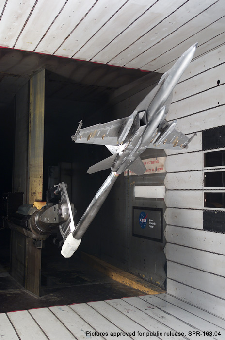

Introduction to Aerodynamics
Merriam-Webster's online dictionary definition for aerodynamics is "a branch of dynamics that deals with the motion of air and other gaseous fluids and with the forces acting on bodies in motion relative to such fluids." So what is aerodynamics again?
 2001 BAR Honda Formula 1 Car
2001 BAR Honda Formula 1 Car
The dictionary definition of aerodynamics doesn't do justice to its scope, when you consider that aerodynamics is a primary contributor to the thrill and excitement in Formula 1 racing. The six minutes of weightlessness in store for passengers on Virgin Galactic sub-orbital space flights is only possible because of its innovative aerodynamic design, which is based on the X-Prize winning White Knight and SpaceShipOne combination designed by Burt Rutan's Scaled Composites, LLC. Aerodynamics is an integral part of everyday life too, from the mundane use of a hair dryer to the airplane carrying you to your vacation destination. So aerodynamics is important and exciting, but what is it?
Aerodynamics is the study of objects (cars, airplanes, etc.) moving relative to a fluid, such as air. This also includes stationary objects where the fluid is moving, such as a hair dryer or wind tunnel. Lift and drag forces are arguably the two most important performance measures studied in aerodynamics. Lift is the force directed perpendicular to the direction of motion relative to the fluid. Drag is the force directed parallel and in opposition to the direction of motion.
Boeing F/A-18 Hornet Wind Tunnel ModelImage courtesy of NASA Ames
Lift force is responsible for keeping an airplane aloft. Downforce (directed downward rather than upward as with lift) ensures that a racing car sticks to the road during cornering. Drag is usually considered an inconvenient side effect of an object moving through a fluid. The engines on an airplane are essential to overcome the drag force opposing the airplane's motion through the air. However, drag can be put to positive use, such as when a motorcyclist 'sits-up' when approaching a corner to use the extra drag to aid in deceleration.
The device of choice for generating lift and drag is a wing. A wing is a collection of airfoil cross-sections lofted together. An airfoil cross-section is the most efficient shape for generating lift and minimizing drag. As anti-gravity devices, wings have a long history of success, being used by insects, birds and most recently airplanes.
The speed of an object through a fluid (or the speed of a fluid over an object) can be represented by the dimensionless Mach number, which relates the object or fluid speed to the speed of sound in the fluid. The Mach number (M) can be used to characterize speed relative to a fluid as follows:
- Incompressible subsonic flow (M < 0.3). Insects, birds, gliders, small propeller airplanes, helicopters and cars operate within such air speeds.
- Compressible subsonic flow (0.3 < M < 1). Most passenger jetliners operate within this speed range.
- Supersonic flow (M > 1). Concorde (M = 2) and the Lockheed SR71 Blackbird (M = 3) were rare examples of airplanes that could sustain supersonic speeds for long durations.
The following sub-categories of Mach number also have special significance:
- Transonic flow (0.8 < M < 1.2)
- Hypersonic flow (M > 5). The Space Shuttle Orbiter encounters M = 25 as it re-enters the Earth's atmosphere from orbit.
 NASA's Space Shuttle STS-1 Columbia launch on April 12, 1981Image courtesy of NASA
NASA's Space Shuttle STS-1 Columbia launch on April 12, 1981Image courtesy of NASA
When an object moves through a fluid, a boundary layer forms around the surface of the object where the fluid quickly accelerates to match the speed of the object (or if the fluid is moving and the object is stationary the fluid quickly decelerates). This is a significant source of drag (called skin friction) that opposes an object's progress through a fluid. Depending on a variety of factors, the boundary layer may remain smoothly attached to the surface (known as laminar flow) or it may transition to a turbulent attached layer, or, if the conditions are extreme enough, it will exhibit unattached turbulent flow.
Parameters such as fluid speed, characteristic object length (e.g., chord length for an airfoil), fluid density and fluid viscosity determine whether a boundary layer is likely to be laminar or turbulent. The Reynolds number combines such parameters into a non-dimensional quantity whose value indicates which flow regime is likely. Why do golf balls have dimples? It's related to the properties of laminar and turbulent boundary layers.
Turbulence is a fascinating and frustrating phenomenon. It is fascinating in that the nearly random, chaotic motion observed is hypnotically beautiful. At the same time turbulence is frustrating because it makes fluid-flow modeling and simulation extremely difficult.
 Advantage CFD's Formula 1 CFD ComputationSymscape does not hold the copyright on this picture
Advantage CFD's Formula 1 CFD ComputationSymscape does not hold the copyright on this picture
The two most common tools for aerodynamic modeling are wind tunnels and Computational Fluid Dynamics (CFD). In a wind tunnel a stationary scale model is placed in a chamber that propels air over the model, which is equivalent to the movement of the model through stationary air. Instruments incorporated in the model capture lift and drag forces. CFD is often referred to as a virtual wind tunnel because it uses a computer to simulate fluid flow over a digital model. CFD numerically solves an approximation to the well-accepted fluid-flow governing equations known as the Navier-Stokes equations. With CFD it is possible to visualize flow in the entire region around a model, which is not feasible in a wind tunnel. Wind tunnels don't have the ambiguities related to turbulence that CFD introduces due to the nature of the approximations used in CFD. Thus wind tunnels and CFD are complimentary tools.
Hopefully this taste of aerodynamics has left you wanting more. Aerodynamicists (those that practice aerodynamics) are found throughout industry, especially in the aerospace, automotive and motor racing industries. They have access to some of the most elaborate test equipment, software and computer resources you will find anywhere. Aerodynamics is a challenging and rewarding field on which to base a career.
If you want to design your own 3D models and simulate fluid flow over them, consider our affordable Professional add-on (with its 30-day free trial) for Caedium.
Feedback
Questions? Ideas? Problems?

Recent blog posts
- CFD Simulates Distant Past
- Background on the Caedium v6.0 Release
- Long-Necked Dinosaurs Succumb To CFD
- CFD Provides Insight Into Mystery Fossils
- Wind Turbine Design According to Insects
- Runners Discover Drafting
- Wind Tunnel and CFD Reveal Best Cycling Tuck
- Active Aerodynamics on the Lamborghini Huracán Performante
- Fluidic Logic
- Stonehenge Vortex Revealed as April Fools' Day Distortion Field
 Get our Blog feed
Get our Blog feed